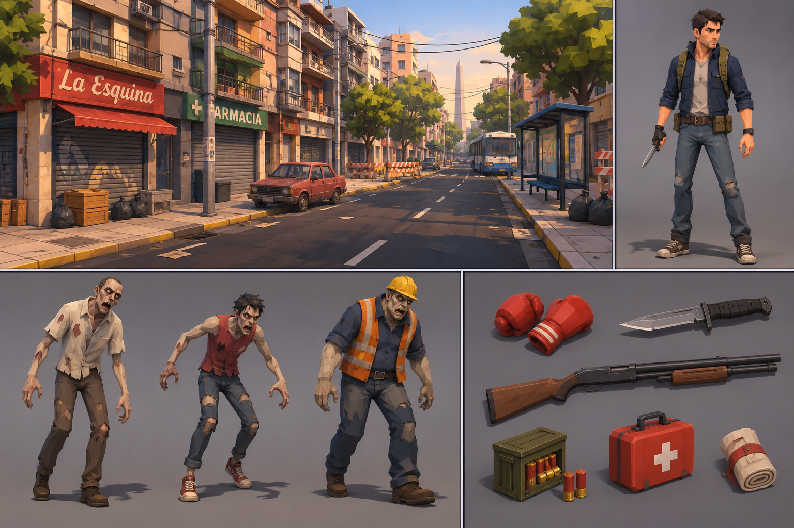

Referencia visual — Supervivencia zombi en Buenos Aires
Imagen guía de dirección artística. No debe utilizarse como fondo del juego: los modelos, materiales, animaciones y escena deben implementarse por separado.

Usá también el archivo PROMPT_MAESTRO.md para las reglas técnicas, los assets candidatos y los criterios de aceptación.